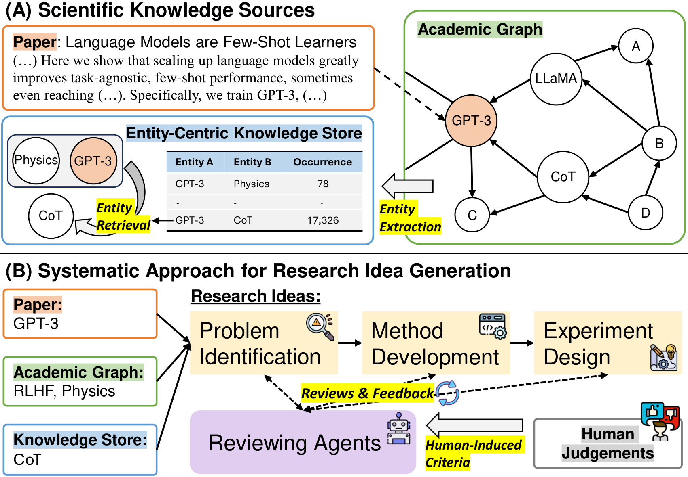
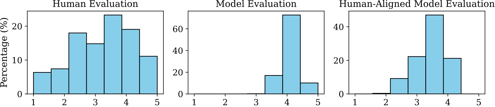
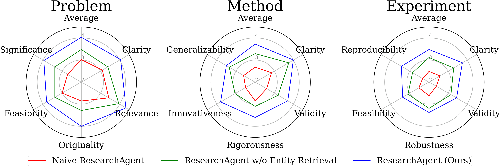
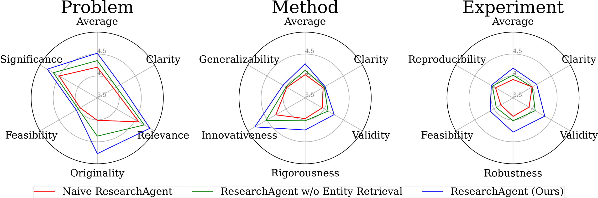
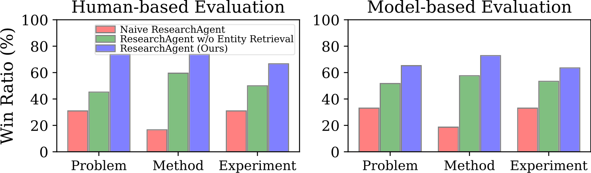
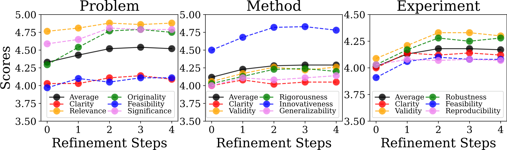
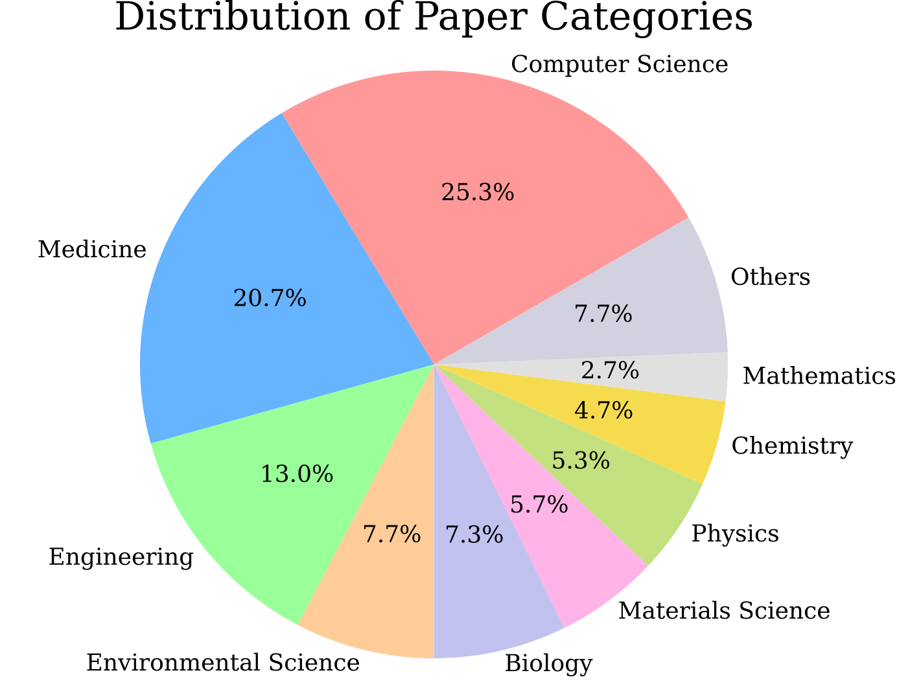

诱导流程
收集 10 对（生成的 Idea， 人类评审的五维 Likert 分数），标注者是发过 ≥3 篇论文的研究者；把这 10 对喂给 GPT-4，让它为每个维度写出 1–5 每一档的详细文字描述（附录 Tables 8–10，每档一段 rubric）。另有 5 名评审者主观认可这些标准（2 人强烈同意、3 人中度同意）。
迭代式科研 Idea 生成：从一篇核心论文出发，靠「引用图 + 实体共现知识库 + 互相评审的 LLM 代理」产出 Problem → Method → Experiment 三件套
这篇论文到底做了什么：给定一篇 2023 年 5 月之后的核心论文，ResearchAgent 自动产出一份完整的科研 Idea（研究问题 + 方法 + 实验设计）。它的特别之处不在「LLM 写想法」，而在三个结构性设计：① 输入端用引用图找相关论文、用 5 万篇论文挖出的实体共现知识库注入跨领域概念；② 过程端让 6 个 LLM 代理分三阶段「生成—评审—修改」迭代 3 轮；③ 评分端的评审标准不是人写的，而是从 10 组真实人类评审标注里反向诱导出来的。本页同时给出对官方仓库的审计：开源代码是 2025 年 8 月（NAACL 发表后）重写的推理流水线，复现不了论文的全部实验，且有两处与论文描述不符。
OpenReview 记录显示：这篇论文从 arXiv 挂出到 NAACL 录用，走了三轮 ARR 滚动评审、整整一年——不是一篇「一轮过」的论文，但它的引用影响力远超 venue 档次。
| 时间 | 动作 | 结果 |
|---|---|---|
| 2024-04-11 | arXiv v1 挂出；同月投 ACL ARR 2024 April | 未中 |
| 2024-08-16 | 修改后转投 ARR 2024 August | 未中 |
| 2024-10-15 | 再投 ARR 2024 October | 分数达标后 commit |
| 2025-02-09 | arXiv v2（camera-ready 对应版，+3 页附录）→ NAACL 2025 Long Paper | ✔ 录用（2025-04 开会） |
版本说明：本页精读基于 arXiv v2（2025-02-09，即 NAACL 录用后的修订版，本地 paper/ResearchAgent_arXiv_2404.07738.pdf 经 md5 校验与 v2 完全一致），不是 2024-04 被拒的 v1。投稿记录来源：OpenReview API（Submission I0oWWdH7cS / A8OgNNF3rV / dMlO5MP42A）；引用数据来源：Semantic Scholar。
ResearchAgent 把「读文献想 Idea」形式化为三步：p = f(L) 找问题、m = f(p, L) 提方法、d = f(p, m, L) 设计实验。每一步都不是一次生成，而是「生成 → 五维评审 → 按低分维度修改」循环 3 轮。

论文设定：2023-05-01 之后发表（GPT-4 训练截止 2023-04，避免背答案）、引用数 > 20，采样 300 篇构成 benchmark。每篇平均带 87 篇参考文献。
引用图上按摘要相似度（SPECTER v2）取 top-10 相关论文；再从知识库检索 top-30 个「共现强度高」的实体。两者连同标题摘要一起塞进 prompt。
ProblemIdentifier 生成「研究问题 + 理由」；ProblemValidator 用 5 个线程并行按 Clarity / Relevance / Originality / Feasibility / Significance 打分（1–5 Likert，每档有文字 rubric）；低于 5 分的维度连同 review/feedback 回喂给 Identifier 重写。循环 3 轮。
同样结构，5 个维度换成 Clarity / Validity / Rigorousness / Innovativeness / Generalizability。拿到上一阶段选出的最佳 problem 作为上下文。
5 个维度：Clarity / Validity / Robustness / Feasibility / Reproducibility。拿到最佳 problem + 最佳 method。
每阶段保留 3 轮历史，按五维平均分选出最佳版本传给下一阶段——不是顺序改进到第 3 轮就停，而是 3 选 1。最终得到 [problem, method, experiment] 三件套。
「生成-评审」如何分工（代码确认）：生成代理（Identifier/Developer/Designer）维护多轮对话历史——refinement 是在同一个会话里追加 user 消息完成的，模型看得到自己上一轮的输出；评审代理（Validator）则是无状态单轮调用，5 个维度各开一个线程、各自独立打分。生成侧代码在 pipelines/agents/problem_identifier.py，评审侧在 problem_validator.py（ThreadPoolExecutor，max_workers=5）。
作者把「人类研究者怎么想 Idea」拆成三个要素：读相关工作（→ 引用图）、跨领域概念联想（→ 实体知识库）、同行讨论迭代（→ ReviewingAgents）。整篇论文可以读作：把这三个要素分别 operationalize 成 LLM 流水线的一个部件，然后逐个做消融证明它们都贡献分数。这个「按人类科研流程建模」的叙事是它对后续工作（AI Scientist、ResearchTown 等）最有影响力的部分。
引用图只能给你「这篇论文的邻居」，知识库要回答的是「哪些概念经常和这些概念一起出现，但不在你的文献列表里」——这是论文声称的 novelty 主要来源。
对当前文献组抽出的实体集合 E，检索 top-k 个外部实体，打分函数（论文 Eq.2）：
score(ei) = Σej ∈ E log P(ej | ei) + log P(ei)
P(ej | ei) = cooccur(ei, ej) / Σx cooccur(ei, x) # 条件概率，由 K 归一化
P(ei) = count(ei) / Σx count(x) # 先验直觉：一个候选实体越能「解释」当前文献里出现的实体（条件似然高）、同时本身不太偏门（先验不过分低），就越值得注入 prompt。论文明确说这只是一种实例化，附录里换成 embedding 检索（BLINK 向量余弦相似）结果基本持平（4.52/4.28/4.18 vs 4.49/4.34/4.16）——说明贡献来自「有外部实体」而非检索公式本身。
代码确认（knowledge/store.py）：实现与公式逐项对应，外加两个论文没写的细节：① 候选实体要求共现次数 ≥ 3 才进入打分（去长尾噪声）；② 概率取 log2 且加 1e-16 平滑；③ top_k 默认 30，用 torch.topk 选取。注意 get_entity_log_likelihood 里重复出现的实体会重复累加条件概率（multiset 语义），与论文「允许重复」一致。
一个被反复引用的案例：核心论文关于果蝇遗传变异，知识库检索到「Drosophila Genetic Reference Panel」和「CRISPR」两个实体，最终生成的 Idea 是「用 CRISPR 在 DGRP 面板上系统扰动，桥接遗传变异与 CRISPR 应用」——单看引用图上的论文推不出这个组合。这类「实体撮合」是作者论证 cross-pollination 的核心证据，但论文只给了定性展示，没有量化「有多少 Idea 真正用到了检索实体」。
这是全文方法论上最新颖、也最需要警惕的一环：ReviewingAgents 的打分 rubric 不是人工设计的，而是 LLM 从真实评审数据里「反推」出来的。
收集 10 对（生成的 Idea， 人类评审的五维 Likert 分数），标注者是发过 ≥3 篇论文的研究者；把这 10 对喂给 GPT-4，让它为每个维度写出 1–5 每一档的详细文字描述（附录 Tables 8–10，每档一段 rubric）。另有 5 名评审者主观认可这些标准（2 人强烈同意、3 人中度同意）。
Validator 每个维度的 prompt 末尾都完整附上该维度 1–5 档的诱导 rubric 原文，并要求输出 Review: / Feedback: / Rating (1-5):。prompt 里还有一句明确的防灌水指令：「请保持挑剔，避免无理由地给 4–5 高分」。评审时相关论文只给标题（include_abstract=False），不给摘要。

容易误解的一点：「与人类偏好对齐」的定量证据其实不厚——全部依据是 10 组标注对诱导出的 rubric + 分布形状对比 + 人-机一致性（Spearman 0.49–0.64，见下表）。10 个样本诱导 15 套 rubric，样本效率惊人但也意味着 rubric 几乎肯定过拟合了这 10 组的风格；而且诱导用的主要是 CS 论文（作者承认），跨领域适用性只用「引用数-分数相关性在两个领域同向」间接论证。
| 比较双方 | 方式 | Problem | Method | Experiment |
|---|---|---|---|---|
| 人 ⇄ 人（20% 双标） | 打分（Spearman） | 0.83 | 0.76 | 0.67 |
| 人 ⇄ 人 | 两两比较（Cohen's κ） | 0.62 | 0.62 | 0.41 |
| 人 ⇄ 模型 | 打分（Spearman） | 0.64 | 0.58 | 0.49 |
| 人 ⇄ 模型 | 两两比较（κ） | 0.71 | 0.62 | 0.52 |
读法：Experiment 维度上所有一致性都最低（人-人 κ 只有 0.41），作者解释为「实验设计评价本身主观」——这同时也说明该维度的人机一致性数字（0.49/0.52）已经逼近人类自身噪声上限，模型评分在 Experiment 上的绝对数值不宜过度解读。



| 变体 | Problem | Method | Experiment |
|---|---|---|---|
| ResearchAgent（完整） | 4.52 | 4.28 | 4.18 |
| – 去掉实体 | 4.35 | 4.13 | 4.02 |
| – 换成随机实体 | 4.41 | 4.19 | 4.13 |
| – 去掉相关论文 | 4.26 | 4.08 | 3.97 |
| – 换成随机论文 | 4.35 | 4.16 | 4.02 |
| – 两者都去（≈ Naive） | 4.20 | 4.03 | 3.92 |


| 底座 LLM | Naive（P/M/E） | 完整 ResearchAgent（P/M/E） | 知识增强是否有效 |
|---|---|---|---|
| GPT-4 (1106) | 4.20 / 4.03 / 3.92 | 4.52 / 4.28 / 4.18 | ✔ 显著 |
| Llama3-8B | 3.76 / 3.69 / 3.54 | 4.18 / 4.03 / 3.95 | ✔ 显著 |
| Qwen1.5-32B | 3.64 / 3.74 / 3.66 | 4.02 / 3.97 / 3.94 | ✔ 显著 |
| GPT-3.5 | 3.56 / 3.56 / 3.63 | 3.58 / 3.58 / 3.60 | ✘ 几乎无差 |
| Mixtral-8x7B | 3.31 / 3.27 / 3.20 | 3.28 / 3.35 / 3.31 | ✘ 几乎无差 |
（Table 5）整条流水线的收益依赖底座模型的复杂概念整合能力：弱模型上 references+entities 塞进去也不涨分。作者归因于涌现能力；对我们的启示是——这类「知识增强 + 多代理评审」框架在弱底座上没有意义，评测时必须绑定强模型讨论。
| 对比（Table 4，假设生成任务） | 有效性 | 新颖性 | 清晰度 | 相关性 | 重要性 |
|---|---|---|---|---|---|
| SciMON | 4.04 | 4.37 | 4.56 | 3.98 | 4.15 |
| Hypothesis Proposer | 3.97 | 4.14 | 4.07 | 4.01 | 4.11 |
| ResearchAgent | 4.11 | 4.88 | 4.77 | 4.05 | 4.81 |
与既有假设生成方法（SciMON、Hypothesis Proposer）不在同一任务定义上（它们做变量间链接预测），这个对比是「迁就式」的，只作参考。
官方仓库共 18 个 Python 文件、约 1,100 行。通读后结论：论文的推理流水线忠实实现了，但产生论文数字的那套东西基本都不在仓库里。仓库 2025-01-14 首次提交，核心代码写于 2025-05 ~ 2025-08（NAACL 2025 年 4 月开会之后），是从零重写的干净版，不是论文实验的原始代码。
ResearchAgent/
├── code/main.py # 入口：S2 拉论文 → 检索 references+entities → 跑流水线
├── code/pipelines/research_pipeline.py # 三阶段 × (生成→评审)×3 轮 + best-of-3 选择
├── code/pipelines/agents/
│ ├── base.py # prompt 拼接公共件（论文/实体/feedback 格式化）
│ ├── problem_identifier.py # 生成代理：首轮生成 / 后续按低分维度 refine（带对话历史）
│ ├── problem_validator.py # 评审代理：5 维度并行线程打分（无状态）
│ ├── method_developer.py / method_validator.py # 同构，换维度
│ └── experiment_designer.py / experiment_validator.py
├── code/knowledge/store.py # 共现矩阵统计 + 贝叶斯检索（top-30，共现≥3）
├── code/models/openai.py # OpenAI 封装：temperature=1.25, max_tokens=1000, 4^n 退避
├── code/utils/{s2, evaluation, data_io, formatting}.py
└── data/
├── papers.jsonl (6,417 行) # 候选论文元数据（代码只取前 300 篇）
├── knowledge.jsonl (37,903 行) # corpusid → 实体计数（注意：部分论文 knowledge 为空 {}）
└── references.jsonl (43,674 行) # 引用快照——⚠ 没有任何代码读这个文件| 事项 | 论文说法 | 代码实际 | 判定 |
|---|---|---|---|
| 引用方向 | 「perusing other papers that cite or are cited by it」（双向） | s2.get_relevant_references 只调 S2 的 /references 端点——即核心论文引用的论文（向后看）；但 prompt 却告诉模型「related papers 是引用了目标论文的研究」（向前看），方向正好说反 |
审计发现 |
| 默认模型 | GPT-4 (2023-11-06 版) | main.py 与 OpenAIClient 默认 gpt-4o——训练数据已包含 2023-05 之后的论文，论文「避免数据泄漏」的时间隔离在默认配置下不成立 |
审计发现 |
| 知识库构建 | BLINK 在 50,091 篇论文上抽实体建共现矩阵 | 仓库只给成品 knowledge.jsonl（37,903 行，且部分条目实体为空），BLINK 抽取与建矩阵的代码不存在；实体「每篇平均 2.17 个」的口径无法核对 |
审计发现 |
| 评测代码 | 人评（Label Studio，150 Idea）+ GPT-4 机评 + 两两比较 + 一致性统计 | 无评测脚本、无标注数据、无 pairwise 比较实现。utils/evaluation.py 只是反馈分数的聚合工具（平均分/低分筛选），不是论文评测器 |
审计发现 |
| 标准诱导 | GPT-4 从 10 组人类标注诱导 rubric | 诱导过程无代码；诱导产物（rubric 文本）被硬编码进各 Validator 的 prompt | 代码确认 |
| references.jsonl | —（论文未提） | 43,674 行引用快照随仓库发布，但全仓库无任何文件读取它——运行期引用实时走 S2 API。推测是构建数据时的中间产物误打包 | 审计发现 |
| 迭代与选择 | 3 轮迭代，分数 3 轮后饱和 | 每阶段独立 3 轮「生成→评审」，最后按五维平均分 best-of-3 选出进入下一阶段的版本；阶段间串行、阶段内轮次间通过 context 传递最佳结果。论文 Fig.4 暗示「逐轮变好」，实现其实是「多臂采样选优」 | 代码确认 |
| 采样参数 | 未写明 | temperature=1.25（很高，利于多样性）、max_tokens=1000、超时 30s、重试 3 次 4^n 退避；重试耗尽后把错误字符串当正常输出返回，解析失败则 problem 置 None 静默跳过评审 | 代码确认 |
最重要的审计结论：这个仓库不能复现论文的任何一张表/图——没有 benchmark 论文筛选代码（论文说「>20 引用、300 篇」，仓库 papers.jsonl 有 6,417 行且筛选逻辑缺失）、没有知识库构建代码、没有评测代码、默认模型换了。它能做的是：用你自己的 OpenAI key，对任意 S2 论文 ID 跑通「生成—评审」流水线、得到三件套 Idea。定位是演示用推理代码，对待它的方式应该是「读机制」而非「验数字」。
[system] 你是以「发现有价值新科学问题」为目标的 AI 助手
[user]
1. 任务说明：要生成 original / clear / feasible / relevant / significant 的问题
2. 材料解读指引：目标论文是中心、related papers 提供上下文、entities 是灵感来源（"not all may be relevant"）
3. 系统性步骤：先读目标论文 → 再读相关论文 → 最后浏览实体
4. 材料本体：目标论文标题+摘要 | 10 篇相关论文标题+摘要 | 30 个实体（' | ' 分隔）
5. 收尾：再次重复目标论文标题+摘要（防 Lost-in-the-Middle），要求按
"Problem: \nRationale: " 格式输出
[refinement 轮] 同一对话追加：低分维度名 + 该维度的定义/Review/Feedback 原文，
要求保持高分维度优势、重写 Problem+Rationale评审 prompt 则是完全独立的单轮：system 设定评审角色 → 任务+材料（相关论文只给标题）→ 该维度 1–5 档诱导 rubric → 要求 Review: / Feedback: / Rating (1-5): 三行输出，正则解析。
① 「生成代理带对话历史 refine、评审代理无状态并行打分」是一个干净好用的多代理模板，代码实现直白（各约 100 行），可以直接借鉴结构；② 评审标准应该显式写出来并尽量对齐真人偏好——哪怕只用 10 组标注做诱导，也比拍脑袋 rubric 强，且诱导过程本身可以自动化；③ 警惕「随机也好过没有」式的消融结果：它提示知识增强类系统必须用「随机材料基线」做对照，否则增益归因不清。反过来，它的局限也是机会：idea 的下游可执行性验证（接到实验/代码 agent 上）、全局回环纠错、弱模型下的知识蒸馏，都是这篇 2024 年工作留出的空位。
归档说明：本页基于 arXiv v2（2025-02-09，NAACL 2025 录用版）+ 其 tex 源码，与官方仓库 commit babb49b（2025-08-24，当前 HEAD）交叉核对；论文 PDF、TeX 源码、代码 clone 均存档于本目录 paper/ 与 code/。归档位置（2026-08-04 定档）：Literature项目或者系统 / 简单 —— 有实质（任务定义、标准诱导、实体知识库均被后续工作沿用）但贡献有限：三轮 ARR 才录用，且开源代码复现不了主结果（详见第五节审计），不足以入「复杂」档。
{kind=link}
{kind=link}